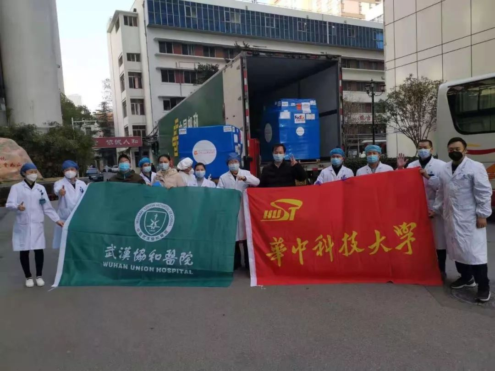

武汉官方称红会“调配不及时”， 医院拿捐赠文件却取不到物资
原文链接 备份链接 01.02.2020本文字数：3601，阅读时长大约6分钟 导读：关于一线医院防护物资紧缺的消息满天飞，湖北省红十字会、武汉红十字会物资分配效率和公平性问题引发质疑。 作者 | 第一财经 李澄晚 1月31日下午，涂先 …
国内外的口罩都在送往武汉，可武汉医院的不仅缺口罩，甚至即将用完。人民日报在其官微发问：究竟是物资紧缺还是物资分配环节存在问题？
截止到目前，协和医院收到的物资全部来自企业和个人捐赠。物资直接对接到各地疫情指挥部或是各家医院，是最有效的
本文首发于南方人物周刊
文 | 本刊记者 杨楠 孟依依
实习记者 何沛芸 聂阳欣
编辑 | 蒯乐昊 周建平
全文约3216字，细读大约需要8分钟

图 / 读者提供
华中科技大学同济医学院附属协和医院（以下简称协和医院）一直在求助。从1月23日至今，以协和医院或是医生个人名义的募集函此起彼伏出现在朋友圈、微信、豆瓣和学习强国等各种民间、官方网站。
协和同另外近二十家医院直接发出接受捐赠社会公告的当天，湖北省长在接受中央电视台采访时称“物资储备充足”。疫情爆发以来，全国各地的医疗防护装备驰援湖北。在过去八天里，在海内外华人的努力下，我国共进口5622.8万个口罩，73.8万件防护服，主要都送往湖北，并优先送抵武汉。
国内外的口罩都在送往武汉，可武汉医院的不仅缺口罩，甚至即将用完。人民日报在其官微发问：究竟是物资紧缺还是物资分配环节存在问题？
1月29日，协和医院向社会募集防护服3000件、医用N95口罩5000个、医用外科口罩8000个、一次性隔离衣3000件、防护面罩1000个。隔日，微博身份认证为协和医院神经外科医生的“协和医院Do先生”，发布微博称：医院物资“不是告急，是没有了”。
负责协和医院物资统筹的刘欣告诉南方人物周刊，1月30日，协和的物资储备最多只能支撑一天半。大部分科室的物资都无法覆盖，“一件都拿不出来了，只能硬上。”刘欣说。
目前，协和医院派出了五百名医护人员奋战在疫情一线，每日需要消耗数千口罩。而原本应该四小时更换的防护服，基本医护人员穿上就不敢脱。防护服的胶是一次性的，一旦脱下，就不能再次使用。“尽量不喝水，大家都穿成人纸尿裤，不去上厕所，就不用脱下（防护服）”，一位协和的护士告诉我们。然而，失望的是，在武汉市红十字会最新公布的发放物资一览表中，作为新冠肺炎定点发热门诊机构，武汉最大的三甲医院之一的协和医院并不在其中。
一位昨日前去武汉国博领取红十字会物资的协和医生告诉我们，不知何故，他们空手而返。他们试图与武汉红十字会交涉两个小时，不但没有领到任何物资，甚至遭遇了强制卸货。
另一个历史细节现在罕有人提起：武汉曾是中国红十字会的发源地。1938年，武汉成为抗战中心，中国红十字会救护总队在汉口成立，协和医院的首位华人系主任林可胜担任总队长。那一年，武汉的红十字会与中国人民在战火中共进退。

图 / 读者提供
社会各界的捐赠去哪儿了呢？

不仅协和医院领不到物资。昨日，武汉市一些其他医院，还有黄冈市、咸宁市等地医院前来，都没有领到物资。也是直到昨日，武汉红十字会才第一次公布的物资发放明细：1月30日仅有13家医院领到了物资。而武汉目前有61家医院设立定点发热门诊，24家医院被临时改造成发热病人收治医院，物资的缺口依然很大。据新华社报道，截至30日，武汉市红十字会已接收社会各界防疫资金6.0808亿元，和9316箱口罩、74522套防护服、80456个护目镜以及其他药品和医疗器械。
南方人物周刊致电武汉市红十字会了解情况。对方承诺由个人与企业定向捐赠医院的物资，可以定向发放，但非定向捐赠的物资，由卫健委和武汉市新型肺炎防控指挥部统一分配、发放给医院。武汉卫健委的工作人员则说，医院每天提交需求给卫健委，具体分配仍转由红十字会负责。
昨晚，武汉市政府党组成员李强在湖北肺炎疫情防控工作例行新闻发布会上坦陈，红十字会物资调拨不够及时需改进。他同时指出，目前目前消耗量大于供应量，是医院物资不足的主要原因。
与此同时，昨晚多家媒体拍摄的照片和视频显示，位于武汉市汉阳区国博中心A馆的武汉红十字的仓库，物资堆积成山。另有名为“微博婶儿”的用户发微博质疑，自己定向捐赠给武汉市黄陂区中医院的9840副医用手套，1月27日显示签收，但黄陂中医院一直没有收到。三日后多次致电武汉市红十字会，对方表示“物资太多，没办法去找。”
当前，红十字会几乎成为捐赠物资唯一的入口。湖北省要求“物资捐赠统一归口，向湖北省捐赠要通过省红十字会，向武汉市捐赠要通过武汉市红十字会”。但武汉市红会常务副会长陈耘接受采访时说：武汉市红会只有十个人，人手非常紧张。尽管市府支援了统计局三十人做物资清查和登记，但仍然是“没办法”。
很多民间慈善机构此刻也在跟病毒赛跑。以韩红慈善基金会为例，基金会每日公布“援驰武汉”的项目进展，已有七批物资抵达武汉及周边城市，近30万只医用外科口罩、6000套防护服和50台血气分析仪即将发放。

图 / 读者提供
统筹物资的发放标准是什么？
前日，湖北省红十字会首次在官网公开第一批次防控新型冠状肺炎捐赠物资使用情况，身处一线、防疫压力极大的协和医院也只收到来自陕西韩女士的三千只口罩。在同一张表上，有三万六千只N95口罩流向了两所莆田系医院。
其中一家仁爱医院并不是发热病人的定点收治医院，该院主治妇科、产科和不孕不育等。昨晚，仁爱医院的院长接受媒体采访时解释说：我们身处疫区，向社会求不来口罩，向市红十字会求不来口罩，只能向省红十字会求助，目前，医院两百多个职工已经常规消耗了这批口罩1.2万只。
而武汉协和医院身处疫情一线的医护人员是这个数字的两倍。
一天后，省红十字会称“对有关信息进行了复核”，发现确因工作失误导致公开的信息不准确。现“N95口罩36000个”更正为“KN95口罩36000个”，其流向“武汉仁爱医院1.6万、武汉天佑医院1.6万”更正为“武汉仁爱医院1.8万个、武汉天佑医院1.8万个”。
省红十字会在公开声明中称，KN95不能用于一线人员防护，所以发给了参与疫情普通医院。
武汉市红十字会在回应南方人物周刊询问时，提及接收物资不少都不符合标准，不能发给一线医护人员。但多位协和的医护人员表告诉南方人物周刊，一些科室已经把日用自筹的不合标物资都顶上了。
刘欣告诉我们，他们收到的各界捐赠物资也有不少不符合医用标准，比如工业口罩和工业防护服。但这些不达标物资并不会浪费，医院保安或者清洁工等二线人员能够得到使用，他们每天奋战在分诊、维持秩序和环境清洁的一线，接触大量的病患和医疗废弃品，他们的安全也是保证医院正常运转、控制疫情再度传播的重要关键。
这十天来，协和的物资是每天筹集一点就用一点，连84消毒水这样的基础物资，整个医院的储存最多也就是三百瓶，这个数量远远无法覆盖全院的需求。所有的物资优先保证发热门诊、隔离病房和重症科室，大部分科室都分不到足够物资，医护人员只能就地取材，用垃圾袋当鞋套，用泳镜当护目镜。

武大北加州校友会和华科北加州校友会联合捐赠了一批2.5吨的医疗物资送入协和医院 图 / 读者提供
协和医院终于接收到了民间捐赠
截止到目前，协和医院收到的物资全部来自企业和个人捐赠。物资直接对接到各地疫情指挥部或是各家医院，是最有效的。
企业和个人的直接捐赠，中间环节精简，能够最快抵达医院。为了节约时间，物资抵达武汉后，协和直接派出小货车去高速关卡或是机场接货。
“说实话，现在就有点八仙过海，各显神通的意思。”一位协和的医生说。危急时刻，有时候全靠个人人脉的突破。有的医生自己联系朋友调配物资，捐赠到自己的科室；还有的护士联系了商超，向科室捐赠了一批盒饭——医院食堂正常运转，但医生们多数赶不上开饭时间。
当协和的医生们拆开物资时，他们常能看到物资箱上写着：“全国人民和你们在一起，一定要加油。”“真的很感动”，一位协和医生说。他还希望南方人物周刊告诉大家，虽然物资很紧缺，但是他们真的不需要滑雪眼镜了。他们很感谢不知名的捐赠方，但滑雪眼镜并不能够作医疗用途。
在发出求助微博后，协和医院昨日驶入了两辆大货车，一辆小货车。其中不仅有医疗用品，也有食品和其他日用品。其中，2.5吨来自武汉大学北加州校友会和华科北加州校友会的联合捐赠。包括20万只医用口罩，2.75万双医用手套和4000件防护服，已在昨日下午直接送入协和医院。这批货物本来也应交由红十字会统筹发放，但是考虑到周转效率，捐赠方通过各种沟通和争取，直接把物资交到了医院，但把物资在红十字会做了登记。
不过，这些物资并不能全数补给协和医院，还将由协和协调分配给同样处在物资紧缺之困的中南医院，同济医院等其他医院。
截止发稿之时，又有武汉金银潭医院向社会各界发来求助信息：“不是告急！是没有了！”
（刘欣为化名）
新型冠状病毒肺炎专题：


征集疫区真实故事，记录我们的命运
《南方人物周刊》现面向所有新冠肺炎一线的读者征稿，写下你正在经历或亲眼所见的故事。如果你是一线医护人员或其家属，疫区公共服务人员，病患本人或家属，专业人士等等，如果你有故事、有困难、有建言，请让我们知道。我们也同时征集采访对象和新闻线索，留下你的联系方式，我们的记者会同您联系。我们会充分保护受访者的隐私。
隔离疫情，但不隔离爱。写出你的真实故事，你的困境和希望，记录我们共同的命运，围城内外携手共度。
此次征稿形式不限：文字（2000字左右）、图片（原创拍摄）、音频视频（原创录制）
祝愿所有在疫区和不在疫区的朋友们，新春快乐，平安健康。
投稿方式：
1、直接给本篇文章留言，格式为：【线索】+内容+您的电话（留言不会被放出，绝对会对您的个人信息保密）
2、《南方人物周刊》微信公号投稿邮箱：wuhantingzhu@126.com
3、《南方人物周刊》官方微博讨论话题：#我在疫区有话说#
注：请务必保证投稿内容的真实、客观、理性，不造谣，不传谣。
原文链接 备份链接 01.02.2020本文字数：3601，阅读时长大约6分钟 导读：关于一线医院防护物资紧缺的消息满天飞，湖北省红十字会、武汉红十字会物资分配效率和公平性问题引发质疑。 作者 | 第一财经 李澄晚 1月31日下午，涂先 …
原文链接 备份链接 海内外源源不断捐赠武汉，各大医院仍全面告急。被指定接收捐赠物资的主要机构湖北省与武汉市红十字会系统成为众矢之的，他们原本应该为重大突发事件做好准备，却一开始就因专业能力不足遭遇了信任危机。 本刊记者探访了武汉红十字会位 …
原文链接 备份链接 武汉市已将所有捐赠物资集中统一调配，这有助于物尽其用，但配送效率亟须提升。这几日陆续有社会捐赠物资送到武汉协和医院，但仅有一线医护人员能穿上防护服，很多医用物资仍然紧缺 文 |《财经》 …
原文链接 备份链接 *************▲************* （武汉红十字会官网截图/图） 全文共*3412*字，阅读大约需要7分钟。 “在物资发放这块，不会说我们想给谁就给谁，所有的分配由卫健委和防控指挥部来决定。” …
原文链接 备份链接 在这场抗击新病毒的战争中，一线医护人员不得不为自身防护揪心，他们和医院、捐赠人一起被迫卷入一场医疗物资的募捐赛 文 |《财经》记者王丽娜 辛颖 编辑 | 王小 这是历次疫情中，一线医院大批量第一次直接向公众募捐，也是 …